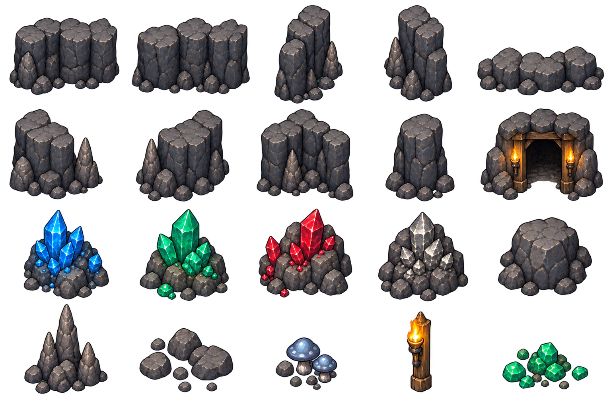

Кристальные пещеры
Вторая локация · скальные стены по краям, ресурсные жилы и свободный центр. Макет для выбора дизайна.
Модульные элементы

Концепт набора для нарезки. Стыки, масштабы и коллизии проверяются при сборке в Godot. Свечение и тени будут отдельными эффектами.